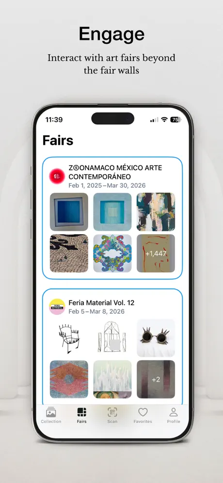
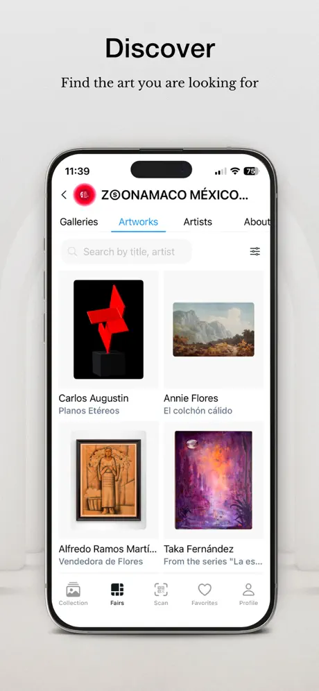
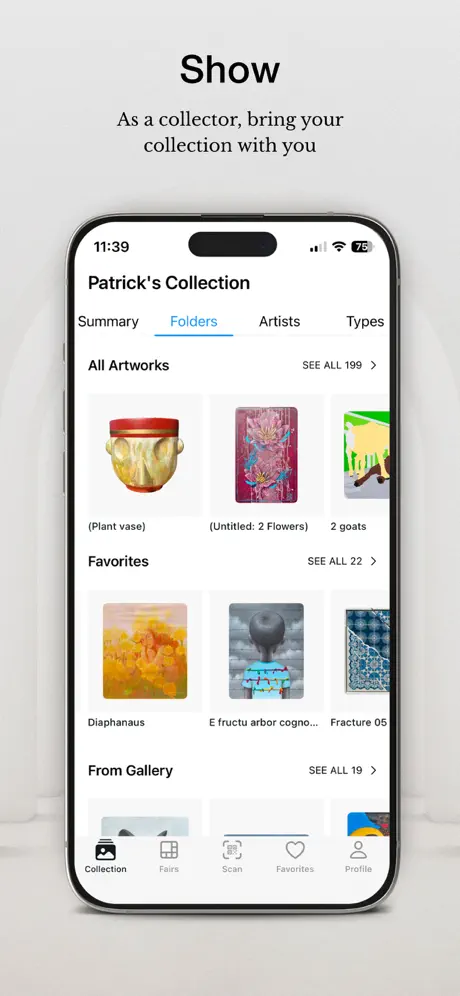
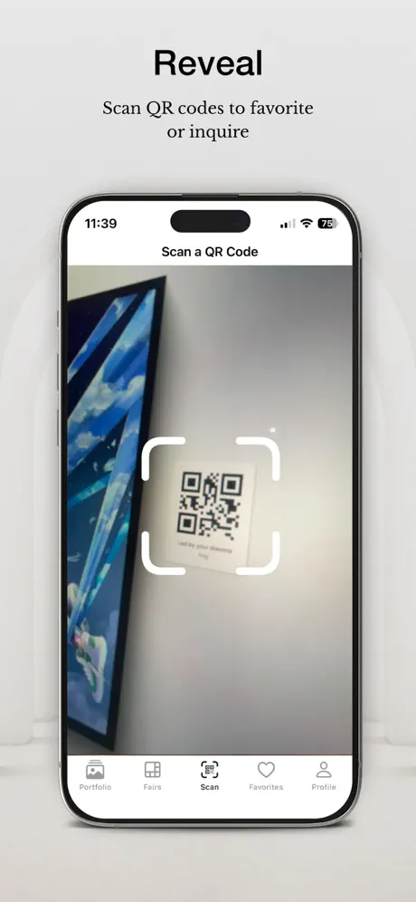
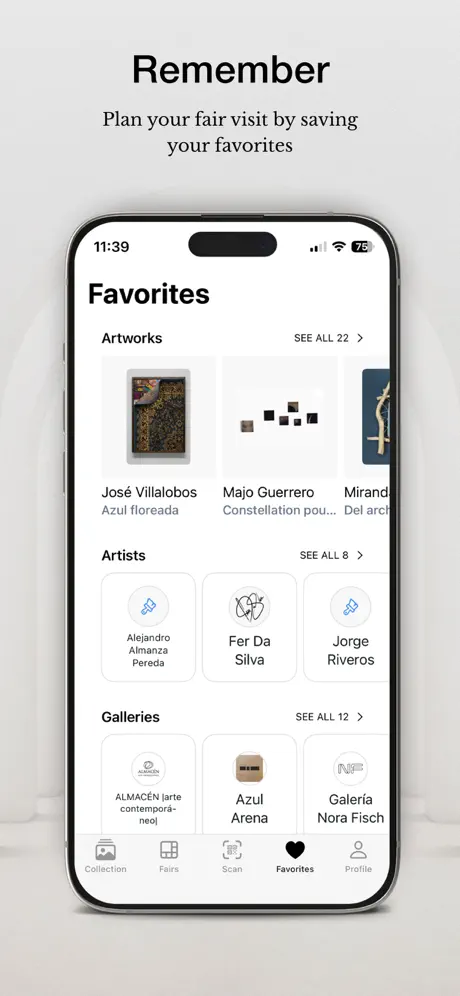
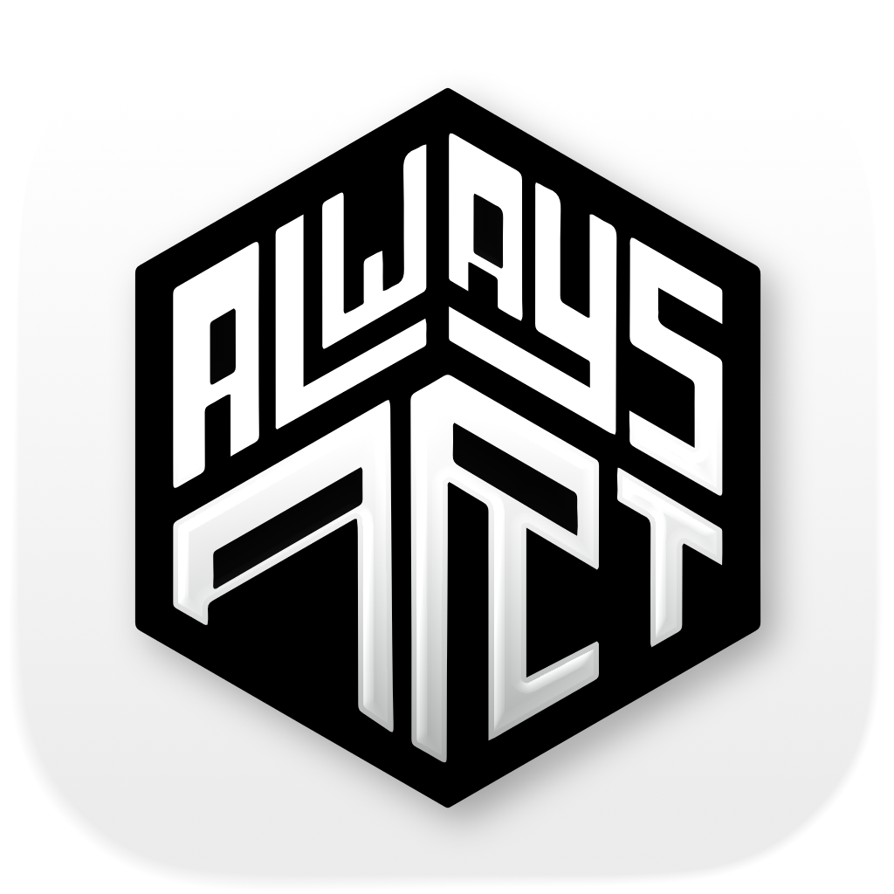
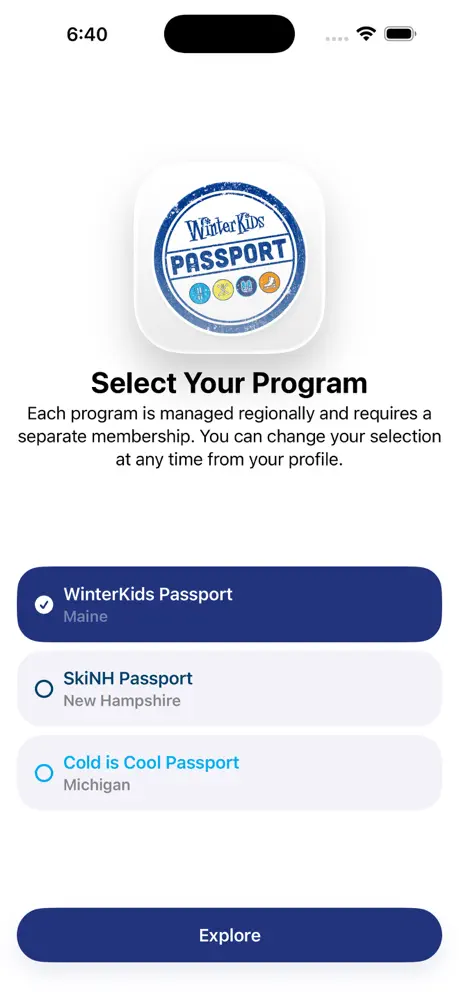
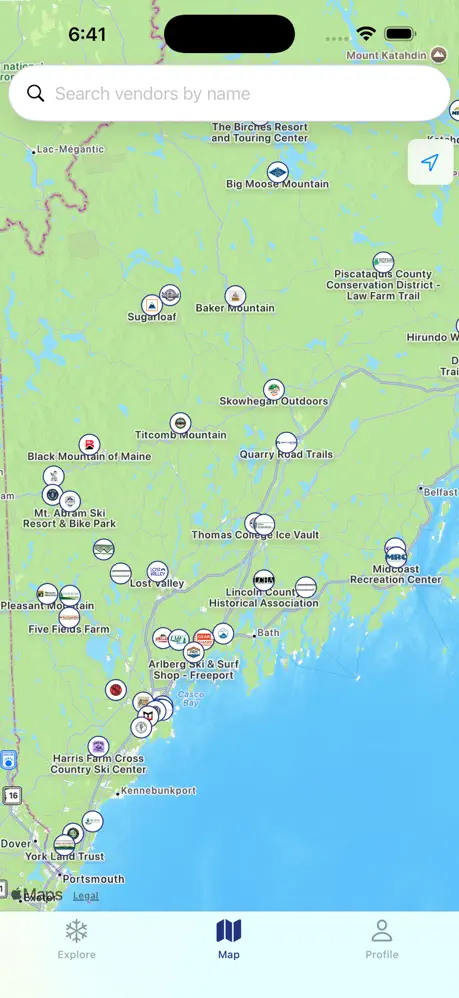
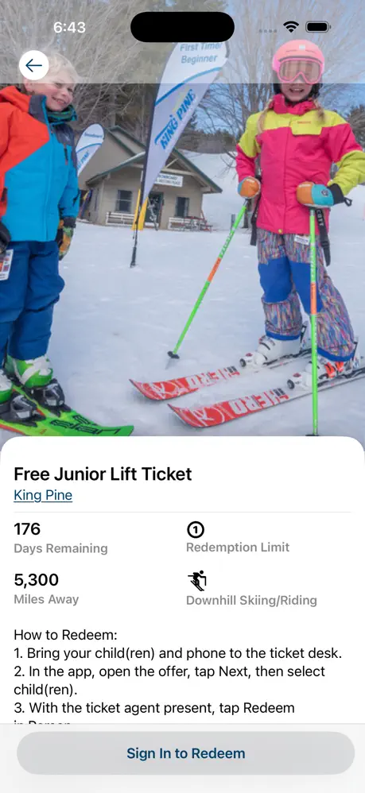
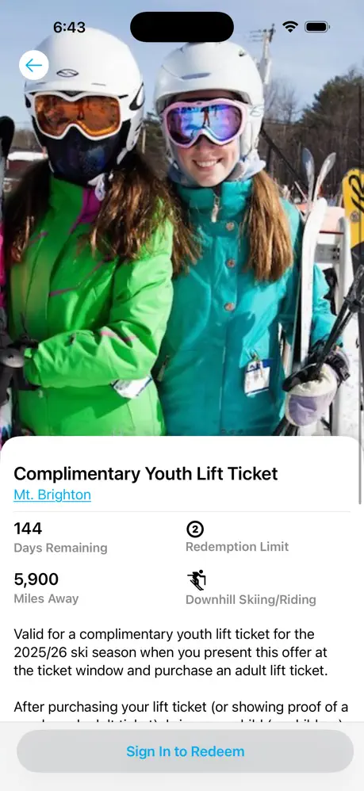

Software engineering student based in Montreal.
At McGill University, previously at Phillips Exeter Academy.
Work






Developed iOS and Android apps from scratch for users to explore art galleries, plan fair visits, and manage their collections. Private by default. Built for continuity. Designed to support how art actually lives over time.






Native iOS and Android applications to provide special winter deals and activities for kids in Maine, New Hampshire, and Michigan. Winner of the 2025 Maine Governers Award.
Projects
Skate tracking and management app, built with Swift and SwiftUI from the ground up. Featured in 9to5Mac and a 4.9 star app store rating.
Lead the flight computer software project for a year. Built embedded C and C++ code targetting a STM32 processor. Helped the team finish 3rd at Launch Canada 2025
Java based C compiler, created for COMP520 at McGill University. Compiles a subset of the C language for the MIPS architecture.
Final project for ECSE316, a simple learning website for others to see how noise cancelling algorithms work.
Words
Published at Phillips Exeter Academy, my seminal personal essay. Selected from over 300 applications to read aloud at the academy.
Exploration of the Bessel function during my differential equations class at McGill.